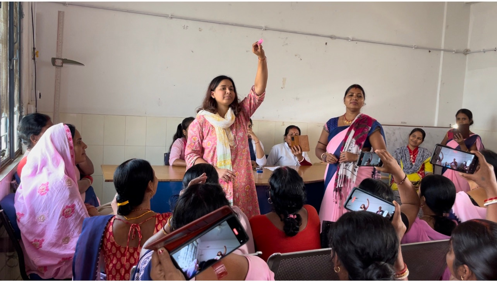
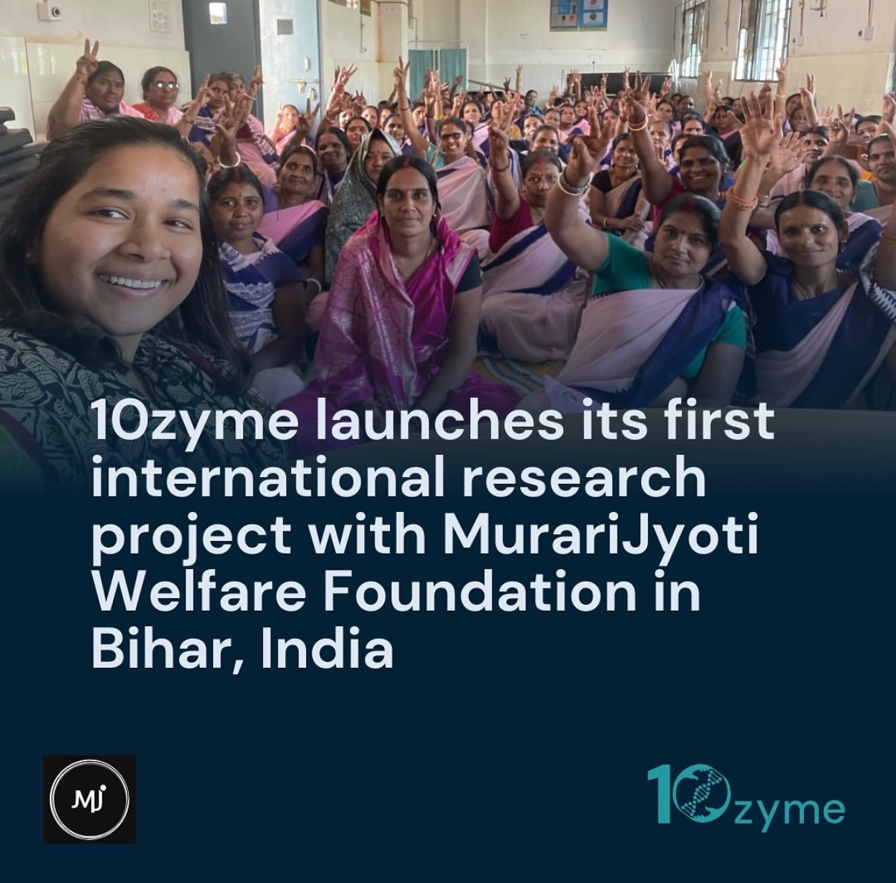
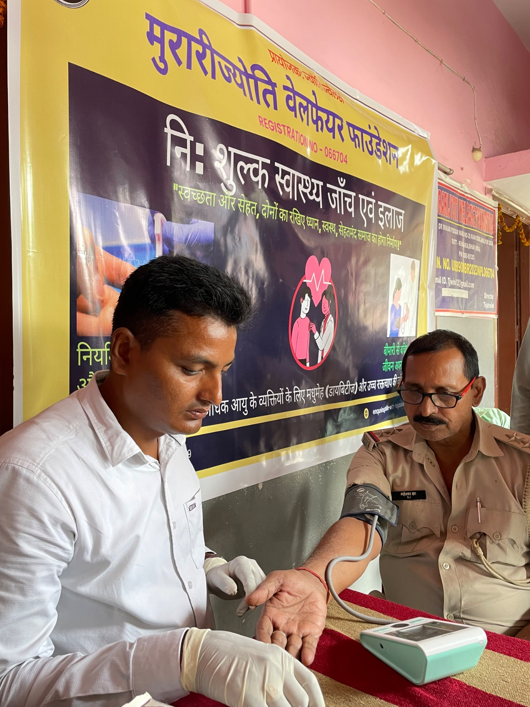
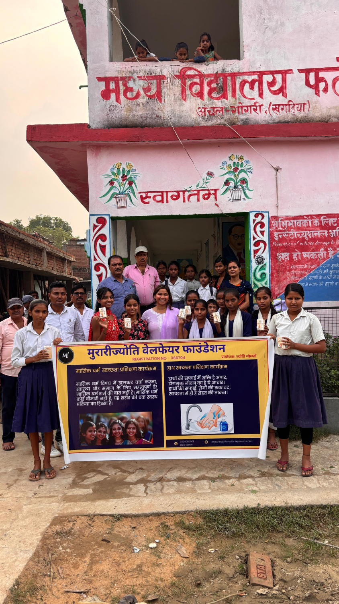

Five programmes · One belief
The work,
programme by programme.
Each of our five programmes began the same way: by listening to what the community actually needed, not by deciding what was good for them. Menstrual health, cervical cancer prevention, community health camps, school education, and disaster relief — across Khagaria and Bhagalpur.
We work with communities, not for them.

§ 01 Menstrual Health & Cup Distribution
A better option, and the dignity to use it.
In Bihar, 67.5% of women still rely on unhygienic methods during their period: cloth, old clothes, toilet paper. Not because they want to, but because nobody gave them a better option, and nobody told them they deserved one.
We run workshops and terrace talks — Chhath pe Charcha — and train ASHA workers to carry the conversation into homes we cannot reach ourselves. In many homes across Khagaria and Bhagalpur, a girl's first period arrives before anyone has explained what it is. She figures it out alone. She learns very quickly that it is something to hide. 71% of adolescent girls in India have no idea what menstruation is before it first happens to them, and 23 million girls drop out of school every year because of it.
We go into communities, government hospitals, and schools and have the conversation that should have happened long before, honestly, openly, with women, girls, and boys together in the same room. We talk about what a period is, the infections that happen when hygiene is poor, and the pain some women feel and why that is normal. We make space for questions that have never been asked out loud before.
One cup lasts up to ten years and costs around five percent of what disposable pads cost over the same period. It works for twelve hours, a full working day, with dignity.
And we give every woman a menstrual cup, free. A woman working in someone else's house, not allowed to use their toilet, can get through her day. A schoolgirl whose government toilet does not work can still come to class. That is not a small thing. That is everything.
2,500+
Women reached
500
Menstrual cups distributed
400+
ASHA workers trained

§ 02 Cervical Cancer Prevention
We started by asking the right question.
Cervical cancer kills more women in India than almost any other cancer. It is also almost entirely preventable. The government launched an HPV vaccine, but in most villages where we work, women have never heard of it.
And the healthcare workers meant to deliver it face barriers that nobody has stopped to ask them about. So we started by asking.
In partnership with 10zyme, a UK health innovation company, we conducted a quantitative research study across Khagaria and Bhagalpur, with ethical approval from Bhagalpur Medical College, to understand how much the community, healthcare workers, and doctors actually know about cervical cancer. The answer was very little.
So we went deeper. In partnership with the University of Essex, and with Dr Angela Pyne of 10zyme continuing alongside us, we ran a qualitative study with healthcare workers and doctors at Bihpur PHC and Fatma Hospital in Purnia, sitting with them in group discussions to understand what they actually face on the ground. What they told us shaped everything that came next.
From those conversations we built a CPD training programme designed to address the real problem, not the assumed one, and delivered in June 2026.
Because knowledge without tools changes nothing. And tools without the right people behind them reach nobody.
500
Survey respondents (health workers, doctors and community)
45
Focus group participants

§ 03 Community Health Camps
Catching it before it does the damage.
India is the diabetes capital of the world, and Bihar carries more than its share of that burden. In rural Bihar, 1 in 4 adults has hypertension, and most of them do not know it.
Diabetes and high blood pressure do not hurt until they do. By then, years have quietly passed, and the damage is already done.
Every three months, MJWF sets up free health checks for diabetes and hypertension through a local diagnostic centre in Gogri Jamalpur. No cost. No paperwork. No conditions. Open to everyone in the community: men, women, police, anybody. People come in, get checked, and leave knowing something about their own body that they did not know before.
If anything is found, they are referred directly to Gogri Anumandal Hospital, where we have a working partnership, so the referral actually leads somewhere.
800+
Screenings completed, every one free
Every 3 months
In Gogri Jamalpur, Khagaria

§ 04 School Education
Because change needs everyone in the room.
Proper handwashing alone can reduce the risk of diarrhoea by up to 40%. It is one of the simplest, cheapest, most effective things a child can learn, yet in rural India, handwashing practices remain poor, especially where toilets do not work and clean water is not always available.
We go into schools and teach children what keeps people well: hand hygiene for everyone, menstrual health for girls with boys in the same room.
We also distribute free menstrual cups in schools, because education without access leaves a girl with knowledge she still cannot act on.
Because change does not happen if only half the community is in the conversation.
1,500+
Students reached across schools and neighbourhoods
10+
Schools reached across two districts

§ 05 Disaster Relief
When the floods come, we go in.
In September 2026, severe flooding struck seven villages across Khagaria district. Roads disappeared. Homes flooded. Women found themselves managing their periods in floodwater, with nowhere to dispose of pads safely.
Between 10 September and 9 October 2026, MJWF ran a month-long flood relief operation across Choti Lagar, Madhavpur, Muradpur, Latambari, Borna, Katghara Dira, and Rampur in Khagaria.
3,000 women were given reusable pads — one pack each. Women had been throwing disposable pads into the floodwater, creating a hygiene crisis. Reusable pads gave them a safe, sustainable option for the duration of the crisis and beyond.
2,500 people received dry food at multiple distribution points. Each unit contained sattu, salt, dalmoth, and chura — foods that require no cooking, no fire, and no water. One unit per family member.
250 families received safe drinking water. Our partner ran a machine that converted floodwater into drinkable water. Before distribution began, water was tested by Jal Jeevan Mission, Khagaria, and confirmed safe. The work was covered by Hindustan and other local newspapers.
3,000
Women given reusable pads during floods
2,500
People given dry food across 7 villages
250
Families given safe drinking water
§ 06 Stand behind the work
Every programme reaches a woman who now knows something about her own body that she did not before. Help us reach the next one.